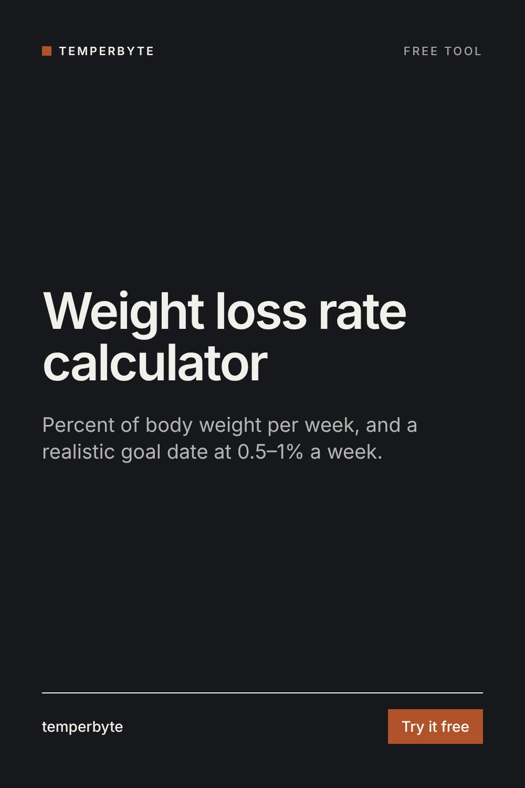

"Lost 2 kg this month" means something different for a 60 kg client than for a 120 kg client. Turn the change into a percent of body weight per week, and see how long a goal weight really takes.
A fixed number like "1 kg a week" is a big push for a light client and a slow one for a heavy client. A percent scales with the person, so it is easier to compare clients and to keep the pace reasonable as the client gets lighter.
A commonly cited range for lean, training people who want to keep muscle while losing fat is about 0.5–1% of body weight per week (Helms, Aragon and Fitschen, Journal of the International Society of Sports Nutrition, 2014). It is a guideline, not a rule. Clients with more weight to lose often lose faster at the start, and many people do well slower than 0.5%. The calculator only flags a rate outside the range so you look at it; it doesn't say the rate is wrong.
A coaching aid, not medical advice. Clients under 18, pregnant or breastfeeding, or with a medical condition need their own doctor's advice on weight loss. Dizziness, fainting, missed periods, guilt around food or skipping meals to make up for eating are reasons to slow down and involve a professional, not to push the rate.
Doing this every week for every client? The free Check-in Analyzer skill for Claude reads a pasted check-in, does the weekly average and rate math, makes the hold, adjust or review call with the reason, flags red flags, and writes a ready-to-send reply in your voice.
Get Check-in Analyzer free